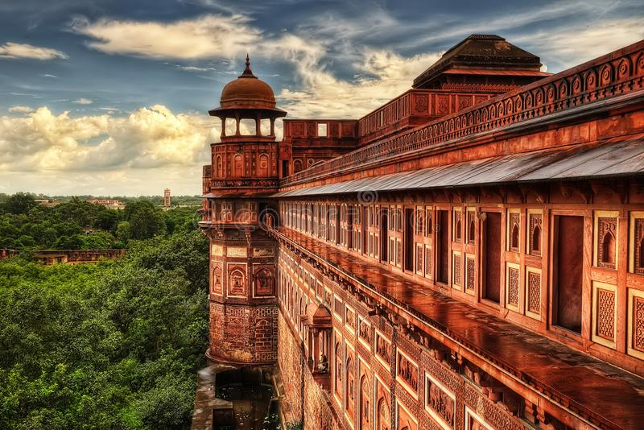
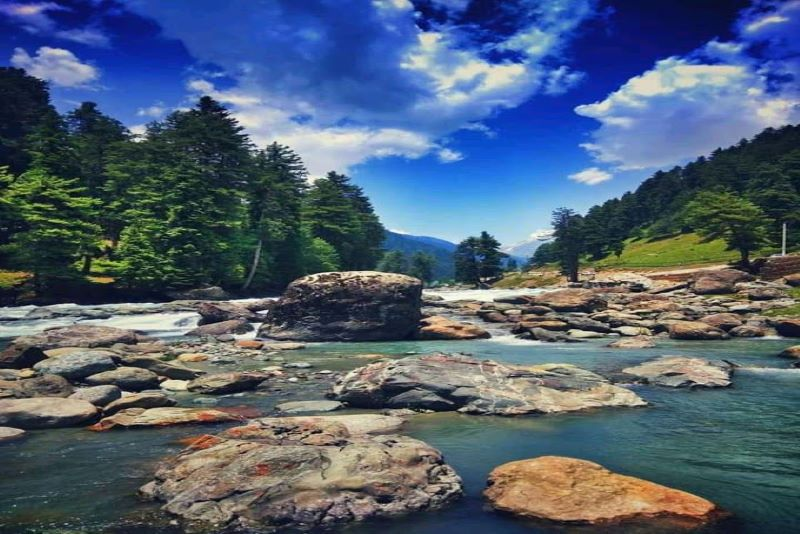
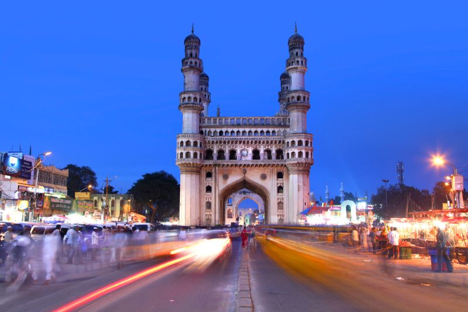

1.AGRA[PLACE OF BEAUTY AND DIVERSITY]

Agra is th city of banks of yamuna river in Agra district of the Indian state of Uttar pradesh.It is 206 kilometer away from the
capital city New Delhi of India.Agra is 4th most popular city in Uttar Pradesh and 26th in all India.
Skindar Lodi was th firts ruler of the Delhi Sultanate to move his capital from Delhi to Agra in 1506,and so he is regarded as the founder of the city called Agra.Skinde Lodi's son,Ibrahim lodi was defeated in the battle of of panipat in 1526 by Babur,Which marked the beginning of Mugal Empire.In a brief interreption in Mugal rule between 1540 to 1556,Sher Shah Suri,establish the short lived sur Empire. Agra was the capital of Mugal Empire from 1540 to 1649, under the Mugal emperors Akber,Jhangir and Shah jhan,after which Shah jahan sifted the capital t delhi.The Mughal Empier saw the buildings of many monuments, espisially Taj Mahal.The city was later takn by the Jats and Maratas and later still felt to the British raj. Agra is a major tourist destination because of its many Mughal-era buildings, most notably the Taj Mahal, Agra Fort and Fatehpur Sikri, all of which are UNESCO World Heritage Sites.[10] Agra is included on the Golden Triangle tourist circuit, along with Delhi and Jaipur; and the Uttar Pradesh Heritage Arc, a tourist circuit of Uttar Pradesh, along with Lucknow and Varanasi. Agra is in the Braj cultural region.
Skindar Lodi was th firts ruler of the Delhi Sultanate to move his capital from Delhi to Agra in 1506,and so he is regarded as the founder of the city called Agra.Skinde Lodi's son,Ibrahim lodi was defeated in the battle of of panipat in 1526 by Babur,Which marked the beginning of Mugal Empire.In a brief interreption in Mugal rule between 1540 to 1556,Sher Shah Suri,establish the short lived sur Empire. Agra was the capital of Mugal Empire from 1540 to 1649, under the Mugal emperors Akber,Jhangir and Shah jhan,after which Shah jahan sifted the capital t delhi.The Mughal Empier saw the buildings of many monuments, espisially Taj Mahal.The city was later takn by the Jats and Maratas and later still felt to the British raj. Agra is a major tourist destination because of its many Mughal-era buildings, most notably the Taj Mahal, Agra Fort and Fatehpur Sikri, all of which are UNESCO World Heritage Sites.[10] Agra is included on the Golden Triangle tourist circuit, along with Delhi and Jaipur; and the Uttar Pradesh Heritage Arc, a tourist circuit of Uttar Pradesh, along with Lucknow and Varanasi. Agra is in the Braj cultural region.
Pre-Mughal era
Kos Minar #793 at 12-mile on Agra-Fatehpur Sikri Road section of National Highway 21. These were built by Sher Shah Suri along the Grand Trunk Road. The history of the city before the Afghan invasions in the 11th century is unclear. The history from the Afghan invasions to the Mughal times, though tolerably well documented, has been described as being uneventful.[14] A 17th century chronicler referred to Agra before Sikandar Lodi's reign (1488–1517) as an old settlement which was merely a village, whose degradation in status was a result of the destruction and pillaging done by Mahmud of Ghazni.[15] The 11th-century Persian poet Masud Sa'd Salman claims to have witnessed Mahmud's assault of Agra, adding that Raja Jaypal, the then ruler of the city, surrendered after seeing a nightmare. Mahmud however proceeded to pillage the city.[16] Sultan Sikandar Lodi, the Muslim ruler of the Delhi Sultanate, shifted his capital to Agra in the year 1504, and is thus regarded as the founder of Agra. Before this, it was under the lordship of Bayana, a city in present-day Rajasthan (Bharatpur district)[17][18] After the Sultan's death in 1517, the city passed on to his son, Sultan Ibrahim Lodi. He ruled his sultanate from Agra until he was defeated and killed by Mughal Emperor Babur in the First battle of Panipat, fought in 1526.2.KASHMIRE[THE PARADISE OF INDIA]

Kashmir[a] is the northernmost geographical region of the Indian subcontinent. Until the mid-19th century, the term "Kashmir" denoted only the Kashmir Valley between the Great Himalayas and the Pir Panjal Range. Today, the term encompasses a larger area that includes the Indian-administered territories of Jammu and Kashmir and Ladakh, the Pakistani-administered territories of Azad Kashmir and Gilgit-Baltistan, and Chinese-administered territories of Aksai Chin and the Trans-Karakoram Tract.[1][2][3]
In the first half of the first millennium, the Kashmir region became an important centre of Hinduism and later of Buddhism; later still, in the ninth century, Kashmir Shaivism arose.[4] In 1339, Shah Mir became the first Muslim ruler of Kashmir, inaugurating the Salatin-i-Kashmir or Shah Mir dynasty.[5] Kashmir was part of the Mughal Empire from 1586 to 1751,[6] and thereafter, until 1820, of the Afghan Durrani Empire.[5] That year, the Sikhs, under Ranjit Singh, annexed Kashmir.[5] In 1846, after the Sikh defeat in the First Anglo-Sikh War, and upon the purchase of the region from the British under the Treaty of Amritsar, the Raja of Jammu, Gulab Singh, became the new ruler of Kashmir. The rule of his descendants, under the paramountcy (or tutelage) of the British Crown, lasted until the partition of India in 1947, when the former princely state of the British Indian Empire became a disputed territory, now administered by three countries: India, Pakistan, and China.[
Mughal rule
The Mughal padishah (emperor) Akbar conquered Kashmir from 1585 to 1586, taking advantage of Kashmir's internal Sunni-Shia divisions,[55] and thus ended indigenous Kashmiri Muslim rule.[6] Akbar added it to the Kabul Subah (encompassing modern-day northeastern Afghanistan, northern Pakistan and the Kashmir Valley of India), but Shah Jahan carved it out as a separate subah (imperial top-level province) with its seat at Srinagar. Kashmir became the northernmost region of Mughal India as well as a pleasure ground in the summertime. They built Persian water-gardens in Srinagar, along the shores of Dal Lake, with cool and elegantly proportioned terraces, fountains, roses, jasmine and rows of chinar trees.[56]3.HYDERABAD[THE CITY OF NAWABS]

Hyderabad (/ˈhaɪdərəbɑːd/ (About this soundlisten) HY-dər-ə-baad, Telugu: [ˈɦaɪ̯daraːbaːd], Urdu: [ˈɦɛːdəɾaːbaːd]) is the capital and largest city of the Indian state of Telangana and the de jure capital of Andhra Pradesh.[A] It occupies 625 square kilometres (241 sq mi) on the Deccan Plateau along the banks of the Musi River, in the northern part of South India. With an average altitude of 542 metres (1,778 ft), much of Hyderabad is situated on hilly terrain around artificial lakes, including the Hussain Sagar lake, predating the city's founding, in the north of the city centre. According to the 2011 Census of India, Hyderabad is the fourth-most populous city in India with a population of 6.9 million residents within the city limits, and has a population of 9.7 million residents in the metropolitan region, making it the sixth-most populous metropolitan area in India. With an output of US$74 billion, Hyderabad has the fifth-largest urban economy in India.
Muhammad Quli Qutb Shah established Hyderabad in 1591 to extend the capital beyond the fortified Golconda. In 1687, the city was annexed by the Mughals. In 1724, Mughal governor Nizam Asaf Jah I declared his sovereignty and founded the Asaf Jahi dynasty, also known as the Nizams. Hyderabad served as the imperial capital of the Asaf Jahis from 1769 to 1948. As capital of the princely state of Hyderabad, the city housed the British Residency and cantonment until Indian independence in 1947. Hyderabad was integrated into the Indian Union in 1948 and continued as a capital of Hyderabad State (1948–56). After the introduction of the States Reorganisation Act of 1956, Hyderabad was made the capital of the newly formed Andhra Pradesh. In 2014, Andhra Pradesh was bifurcated to form Telangana and Hyderabad became the joint capital of the two states with a transitional arrangement scheduled to end in 2024. Since 1956, the city has housed the winter office of the President of India.
Modern history
In 1714, Mughal emperor Farrukhsiyar appointed Asaf Jah I as Viceroy of the Deccan with the title Nizam-ul-Mulk (Administrator of the Realm).[30] In 1721, he was appointed as Prime Minister of the Mughal Empire. His differences with the court nobles led him to resign from all the imperial responsibilities in 1723 and leave for Deccan.[31][32] Under the influence of Asaf Jah I's opponents, Mughal Emperor Muhammad Shah issued a decree to Mubariz Khan, the governor of Hyderabad, to stop Asaf Jah I which resulted in the Battle of Shakar Kheda.[31]:93–94 In 1724, Asaf Jah I defeated Mubariz Khan to establish autonomy over the Deccan Suba, named the region Hyderabad Deccan, and started what came to be known as the Asaf Jahi dynasty. Subsequent rulers retained the title Nizam ul-Mulk and were referred to as Asaf Jahi Nizams, or Nizams of Hyderabad.[26][29] The death of Asaf Jah I in 1748 resulted in a period of political unrest as his sons and grandson—Nasir Jung (1748–1750), Muzaffar Jang (1750-1751) and Salabat Jung (1751-1762)—contended for the throne backed by opportunistic neighbouring states and colonial foreign forces. The accession of Asaf Jah II, who reigned from 1762 to 1803, ended the instability. In 1768 he signed the Treaty of Masulipatam, surrendering the coastal region to the East India Company in return for a fixed annual rent.[33]4.JAIPUR[THE PINK CITY OF INDIA]

aipur (/ˈdʒaɪpʊər/ (About this soundlisten),[6][7][8] Hindi: [ˈdʒəjpʊr]) is the capital and the largest city of the Indian state of Rajasthan. As of 2011, the city had a population of 3.1 million, making it the tenth most populous city in the country. Jaipur is also known as the Pink City, due to the dominant color scheme of its buildings. It is located 268 km (167 miles) from the national capital New Delhi.
Jaipur is a popular tourist destination in India and forms a part of the west Golden Triangle tourist circuit along with Delhi and Agra (240 km, 149 mi).[11] It also serves as a gateway to other tourist destinations in Rajasthan such as Jodhpur (348 km, 216 mi), Jaisalmer (571 km, 355 mi), Udaipur (421 km, 262 mi), Kota (252 km, 156 mi) and Mount Abu (520 km, 323 mi). Jaipur is located 616 km from Shimla.